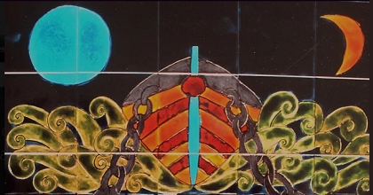
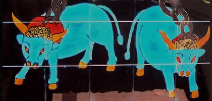

Illustrée par des chants du Barzhaz-Breizh
de Théodore de La Villemarqué et autres pièces
tirées du répertoire des conteurs et des chanteurs,
ainsi que de l'œuvre d'un auteur contemporain
Cliquer sur ces vignettes pour ouvrir ou fermer les chapitres et paragraphes
Ce chant est bien de chez nous: c'est du breton.
Les livres des Romains nous disent beaucoup de choses sur leur univers, mais il nous manque leur voix.
Des Celtes nous ne savons presque rien, mais ils chantent encore.
Michel Tréguer, Polytechnicien et producteur de radio, né en 1940
Gwerz "Marv Pontkaleg" Telenn: Alan Cochevelou
Présentation de La Villemarqué, du Barzhaz Breizh et de la querelle du Barzhaz Breizh
[avec une erreur de date : 1er Barzhaz Breizh de 1839, non de 1833].
*********
Michel Tréguer résume ainsi le propos de Théodore de La Villemarqué, auteur du Barzhaz Breizh, concernant la Poésie Celtique:
«Partout», écrivait-il déjà prémonitoirement dans son Introduction
[de 1839 reprise en 1845 et 1867]
, «une espèce d'anathème a été lancé contre ces races malheureuses [de Bretagne, de Galles , d'Irlande, des montagnards d’Écosse] que seule leur fortune a trahis: Partout frappés d'ostracisme, elles ont été longtemps bannies du domaine de la science. Et même aujourd'hui qu'elles n'ont plus à gémir sous la tyrannie du glaive, le despotisme intellectuel ne les a pas encore délivrées de son joug
sur tous les points de l'Europe
.»
(ajouté en 1845)
[Préface de 1867, chapitre 5 «L'histoire nationale transfigurée»]
Pourtant, combien de détails intimes, de particularités de mœurs qui échappent aux historiens, la poésie celtique [n'a-t-elle pas ]sauvés?
[Introduction, chapitre X, alinéa 27 (Fêtes profanes et religieuses)]
Comment ne pas répéter avec les Bretons d'autrefois: «Non, le roi Arthur n'est pas mort!»
Deux sœurs Goadec chantent les "Gosperoù ar Raned".
Michel Tréguer: Nous voici d'emblée au cœur du débat: cette étrange litanie ouvre le Barzhaz Breizh sous le titre de
"Ar Rannoù"
, les "Nombres", les "Séries"...
[Traduction erronée, héritée de La Villemarqué. En fait, les "sections", les "parties": de "rannañ", diviser, partager et prononcer (une parole)].
Or pour les sœurs Goadec, ces
"rannoù"
ont toujours été des
"raned"
, des têtards...
[faux: "ran -ed" (f) désigne la "grenouille verte", "glesker-ed" (m) étant la "grenouille rousse" (et "Gwesklen" l'équivalent breton de "Duguesclin" dans le Barzhaz Breizh!). "Têtard se dit "penndolog-ed" (m) et "crapaud", "touseg-ed" (m).]>
...
Catéchisme druidique pour le Barzhaz Breizh, comptine amusante, sans signification pour les Sœurs Goadec... Dégénérescence ou reconstruction? Mauvaise assimilation ou habile malversation? La parole est donnée à DONATIEN LAURENT.
Selon lui, il y a là traditionnellement un jeu de mot voulu entre
"raned"
et
"rannoù"
. Le sens initial est le sens de "séries", que La Villemarqué a bien vu.
Donatien Laurent: J'ai rencontré un vieux monsieur de Scrignac qui chantait ces séries et pour qui, tout en appelant son chant
„Gosperoù ar raned“
, savait bien que le mot voulait dire „une part“.
Si on se rapporte à la littérature médiévale irlandaise par exemple, on a ce mot
„rann“
, encore vivant d'ailleurs en Écosse gaélique et en Irlande, qui veut dire
„un quatrain“
. Et on a souvent dans les textes du moyen-âge, en irlandais moyen par exemple, un personnage que l'on présente et qui tout à coup va dire quelque chose. Et l'on annonce:
„Agus tha eag ràdh rann“
: „et il dit un couplet“ (breton:
ha lavarout a reas ur rann
). C'est un petit passage fixé en vers qui est plus important que le texte en prose dans lequel il est inséré. On a d'ailleurs, en moyen-irlandais un ouvrage qui s'appelle
„Soisgeul na Rann“
,
L’évangile des rann“
, dans lequel on a la même forme qu'ici c'est-à-dire un dialogue où quelqu'un demande „Dis-moi le premier
rann
“...
Les Sœurs Goadec continuent leur chant en fond sonore
de la version française du poème du Barzhaz
[Les
sœurs Goadec
(en breton :
Ar C'hoarezed Goadeg
) sont un trio de chanteuses bretonnes originaires de Treffrin en Carhaix. Trois sœurs constituent le trio : Maryvonne ("Tanon", 1900-1983), Eugénie ("Tanie", 1909-2003) et Anastasie Goadec ("Tasie", 1913-1998). Elles commencent à animer des festoù-noz à partir de 1956. L'engouement pour la musique traditionnelle les propulse en 1972-1973 sur le devant de la scène, à la suite d’Alan Stivell, un de leurs grands admirateurs. Les trois sœurs ont beaucoup apporté à la pérennisation de la culture bretonne. Eugénie ("Tanie") ne participe pas à l'émission de 1980. (Source Wikipédia, 2024).]
Donatien Laurent: On a, je pense, des pièces de ce type (explication du monde par des séries de choses qui vont par 1, 2,3...)
dans toute l'Europe
, des pièces populaires dans lesquelles on classe en séries de douze ou de treize différentes choses et c'est une chanson
récapitulative
, c'est-à-dire que l'on dit „la première série c'est celle-ci, la 2ème c'est celle-là, etc. jusqu'à 12 et on récapitule et cela devient un exercice de mnémotechnique.
Il y a en français également, des pièces de ce type, mais qui n'ont pas
l'arrière-fond archaïque
qu'on sent dans cette chanson-là, qui est difficile à percer aujourd'hui. La Villemarqué a cherché et a retrouvé un sens dans cette chanson qui n'en avait plus. Il a donné son interprétation comme une
hypothèse
. Là où il est, je pense, tombé juste, c'est en pensant que cette chanson remonte certainement à
une haute antiquité
dernière elle.
[L'ouverture d'esprit et le ton conciliant dont Donatien Laurent crédite La Villemarqué n’apparaissent clairement que dans le Barzhaz Breizh de 1867! Le jeune La Villemarqué était bien plus catégorique].
Les Sœurs Goadec achèvent leur chant en fond sonore
de la fin du poème du Barzhaz en version française
Une sœur Goadec: Je ne sais pas quel âge j'avais quand j'ai appris cette chanson. Peut-être 7 ou 8 ans. C'est mon père qui nous a appris cela. Mon frère Joseph l'avait aussi apprise et il l'a sue avant moi. Et quand tous les deux nous la chantions, jamais il n'hésitait à la chanter.
Donatien Laurent : J'ai rencontré quelqu'un qui vous avait connue à l'école et qui me disait qu'elle se rappelait très bien que vous chantiez ça avec votre frère.
Sœurs Goadec: Oui, quand on chantait tous les deux...
Donatien Laurent : C'est vous qui interrogiez et c'était lui qui disait, alors?
Sœurs Goadec: Oui Job c'était moi. C'est comme ça que j'ai appris
Donatien Laurent : Qu'est-ce que ça raconte, cette chanson-là?
Sœurs Goadec: Ça raconte un peu de tout, il y a beaucoup de choses là-dedans.
Donatien Laurent : A des gens qui ne comprennent pas le breton, comment peut-on expliquer?
Sœurs Goadec: Quand on dit
„nav den bemde“
, ça veut dire qu'il y a 9 personnes tous les jours à battre le blé, sur l'aire avec le fléau, tant que la moisson durait, quoi...
[Que la comptine insiste sur le mot "bemde" n'est, curieusement, relevé par aucun commentateur "savant". Je pense que ce mot a été introduit, non pour son sens, mais pour l'assonance avec "den" (homme).]
Donatien Laurent : La chanson commence à 1, puis 2, puis 3...
Sœurs Goadec: Il y a des "modes" où, je ne sais pas qu'est-ce qu'ils disent,,, Cette chanson... Qu'elle est vieille!
Donatien Laurent : Vous avez une idée d'à quand ça remonte?
Sœurs Goadec: Mon père a appris cette chanson d'un autre aussi.
Théodore Hersart de La Villemarqué
par Jeanne Malivel (1895-1926)
Michel Tréguer: Les sœurs Goadec ne savent guère le sens de ce qu'elles chantent. Mais elles ont quelques excuses, car à vrai dire, personne n'y entend grand chose.
La Villemarqué s'y est essayé très savamment:
les 2 bœufs seraient les attributs d'une divinité, Hu-Gadarn;
les 3 vies et les 3 morts lui rappellent le „Je suis né 3 fois“ du barde Taliésin;
il y avait bien des pierres à aiguiser dans les talismans dont
Merlin
fit, selon la tradition galloise , présent aux Bretons;
les 8 génisses de l'Île profonde sont celles d'une déesse de Mon-Anglesey;
les 9 petites mains blanches et les 9 mères qui gémissent, sont une allusion à des sacrifices d'enfants attestés dans la région d'Aber-Vrac'h;
les 10 vaisseaux ennemis venant de Nantes seraient tout simplement ceux de César,
et les 11 prêtres blessés sur la route de Vannes les restes du sénat des Vénètes massacrés sur son ordre etc.


"Les boeufs de Hu-gadarn" par Dodig Jégou (1934-2024)
Cela dit, peut-être faut-il se garder de sourire trop vite de ce luxe de précisions. En osant ainsi se mesurer au texte,
peut-être La Villemarqué ne fait-il rien d'autre que ce qu'ont fait avant lui des générations de bardes qui entre des passages versifiés immuables, denses et souvent obscurs, pouvaient laisser courir leur imagination.
En faisant confiance à son rêve, sans doute est-il
plus celte, est-il plus vrai
que ses détracteurs rationalistes qui parlent depuis un autre monde, celui qui a tué les Celtes précisément.
[En réalité, La Villemarqué s'est toujours défendu d'avoir laissé libre cours à son imagination. Il n'est pas sûr, qu'il aurait adhéré au portrait que fait de lui Donatien Laurent.]
Donatien Laurent: On demande
„Ur rann deus ar c'hentañ rann“
, Qu'est-ce que c'est „ur rann“?
Sœurs Goadec: „Rann“ c'est... Moi j'avais demandé autrefois...à celui qui...il m'a dit que ça s'appelait des têtards... des grenouilles... dans l'eau... qui chantaient „gra, gra, gra“...
Donatien Laurent : C'est curieux quand même qu'on dise: „Un rann, puis deux...“ jusqu'à douze. On explique des choses dans ces „rann“-là“.
Sœurs Goadec: Oui, mais on ne sait pas tout ce que ça veut dire non plus.
Donatien Laurent :
„Jobig bihan Tilhore...“
Qu'est-ce que ça veut dire, „Tilhore“?
Sœurs Goadec: C'est le nom d'une personne....
Michel Tréguer: Fascinantes énigmes que celles qui sont en nous. Que peuvent bien vouloir dire ces paroles que je sais, qui sortent de ma bouche? Qu'est-ce que c'est que parler? C'est en grande partie
à leur propre insu, que ces chanteuses sont porteuses d'une tradition plus que millénaire
. Leurs corps, leurs attitudes, leurs langues, leurs intonations, leurs tics de langage deviennent alors aussi de possibles messages qu’il s'agit de repérer et de décrypter.
On remarquera la
familiarité, l'intimité même de l'entretien
. Le scientifique ayant fait la preuve de la sincérité de sa propre passion est devenu un peu le fils spirituel de la maison. Il n'est pas exagéré de dire que tous cherchent ensemble, interrogent leur propre mystère, leur propre celticité. La tradition peut-être s'invente de nouvelles voies pour se perpétuer.
Michel Tréguer: Comment faisiez-vous pour apprendre une chanson? Il fallait l'entendre souvent, ou bien vous appreniez vite?
Sœurs Goadec: Je repassais la chanson dans ma tête.
Michel Tréguer: Et votre père était connu pour en savoir beaucoup? Il en connaissait autant que vous maintenant, par exemple?
Sœurs Goadec: Oui, dans le temps c'était ainsi... Mais, ça dépend. Il y avait des familles où l'on aimait beaucoup apprendre à chanter, Des chansons il fallait en chanter en certaines circonstances.
Michel Tréguer: Vos parents, ils chantaient quand?
Sœurs Goadec: Dans leur jeunesse, ils chantaient le
mardi-gras, la plus grande fête de l'année à Carhaix
.
[Détail non relevé par les commentateurs!]
Alors mon père, qui n'était pas encore marié, demandait à ma mère de chanter après lui. Elle répétait après lui... Ils se rencontraient pour danser, toujours pour danser... Mais dans ce cas-là on ne chantait pas de mélodies.
Michel Tréguer: Peut-être est-ce ainsi qu'elle s'est éprise de lui.
Sœurs Goadec: Je ne sais pas. Il nous l'a dit, mais je ne me rappelle plus.
Dans les petites maisons, on n'avait pas souvent l'occasion de danser et de chanter comme nous on faisait. Il fallait l'arrachage de pommes de terres etc.
Puis il y eut aussi des journées exprès et des soirées exprès, des festoù-noz destinées aux jeunes. On en a fait ici. Les jeunes viennent et ça leur plaît beaucoup.
Michel Tréguer: D'un côté donc des transmissions populaires, des mécanismes inconscients, des reviviscences imprévues comme celles des festoù-noz, sortes de bals traditionnels où jeunes et vieux dansent par chaînes et non par couples, sur les mêmes airs et les mêmes paroles que leurs ancêtres, et de l'autre, la prise de conscience de ces phénomènes, leur étude rationnelle et de savantes querelles.
Donatien Laurent : La Villemarqué a publié son recueil, voulant faire avant tout une histoire de Bretagne par la chanson populaire, un peu tenté par son imagination, mais aussi y croyant fermement, il a essayé de retrouver des pièces dont une, justement les Vêpres par exemple, qu'il appelle „Ar rannoù“, les „Séries“, est un dialogue entre un druide et un enfant. Il la place en tête de son recueil, comme la chose la plus ancienne. Laissons-lui la responsabilité de cette hypothèse, mais c'est une hypothèse parmi d'autres.
[La haute antiquité de l'archétype des séries récapitulatives est une quasi-certitude.]
Et il prétend ainsi retrouver toute l'histoire de Bretagne, en poésies et chansons populaires, depuis les luttes des Bretons avec Charles le Chauve, par exemple; ou bien le tribut que Noménoé au 9ème siècle refuse de payer au roi de France (Charles le Chauve, précisément) et pour chaque événement de l'histoire de Bretagne il a une chanson qu'il fournit.
Donatien Laurent présente alors un exposé détaillé sur la
"Querelle du Barzhaz-Breizh" et sa découverte des 3 "Manuscrits de Keransquer"
dont il a déchiffré et traduit le premier:
Michel Tréguer: Deuxième pièce du Barzhaz Breizh
[de 1845 et 1867, mais 1ère du Barzhaz Breizh de 1839]
, ici chantée par Youenn Gwernig, la fameuse prophétie de Gwenc'hlan que La Villemarqué dit avoir recueillie en Melgven et qu'il attribue à un barde du 5ème s. jeté aux fers, les yeux crevés par un prince étranger et chrétien.
Donatien Laurent : C'est une des chansons qui remonte à la 1ère édition de 1839 et qui
pose d'emblée le problème de l'authenticité du Barzhaz Breizh
, parce que c'est un chant que La Villemarqué présente comme un "chant bardique", composé par le barde Gwenc'hlan qui est un poète, dit-il et dit-on, du 6ème-7ème s., donc du Haut-moyen-âge breton, dont on connaissait le nom par des grammairiens. Dom Le Pelletier a fait un dictionnaire à partir de textes plus anciens et il est le 1er à citer le barde Gwenc'hlan comme auteur de poésies bardiques anciennes et de prophéties. C'est un texte assez étonnant: je le lis un peu en français:
Donatien Laurent :
"Ce n'est pas que j'aie peur... 3 fois avant de se reposer enfin."
Traduction CS:
6. Je n'ai pas peur assurément;
J'ai vécu bien assez longtemps.
7. Tu cherches et ne me trouves pas;
Sans chercher, tu me trouveras.
8. Qu'importe ce qu'il m'adviendra,
Car ce qui doit être sera.
9. Mourir trois fois c'est notre lot
Avant notre éternel repos.
Donatien Laurent : Déjà,
on n'est pas dans une ambiance de chant traditionnel.
Ces phrases philosophiques, on n'en connaît pas de ce genre. Cela a pu exister et disparaître. En tout cas cela pose un problème.
Ensuite l'autre partie, un combat entre un sanglier et un cheval de mer, est aussi assez étonnante.
"Je vois le sanglier...Frappe!"
Traduction CS:
10. Hors du bois le vieux sanglier
Sort en boitant, le pied blessé.
11. De sa gueule ouverte le sang
S'écoule et son crin est tout blanc.
12. Autour de lui ses marcassins
Grognent, car ils ont tous grand faim.
13. Le cheval de mer que je vois,
Le rivage en tremble d'effroi.
14. Comme neige blanche brillant,
Il porte au front cornes d'argent.
15. On voit sous lui bouillonner l'eau
Au feu tonnant de ses naseaux.
16. D'autres chevaux il vient autant
Qu'il y a d'herbe au bord d'un étang.
17. - Cheval de mer, frappe-le donc
A la tête! Frappe et tiens bon!
18. Les pieds nus glissent dans le sang.
Frappe fort, frappe constamment!
19. Le sang monte comme un ruisseau!
Frappe donc encore, il le faut!
20. Le sang monte jusqu'au genou!
Comme un lac il s'étend partout!
21. Frappe plus fort! Et frappe bien!
Tu te reposeras demain.
22. Frappe-le, cheval des tempêtes,
Frappe-le fort! Frappe à la tête! -
Donatien Laurent : C'est étonnant et tout-à-fait
dans le genre de ces poèmes bardiques savants
, fraîchement traduits par les Gallois au début du 19ème s. que
La Villemarqué connaissait par les Gallois
, mais qui sonnent un peu étrangement dans la traduction bretonne. Je continue parce que l'on va vers des sommets...
[En gros, ce poème est construit à partir de citations des poètes anciens gallois. Il est étonnant que Donatien Laurent n'ait pas creusé d'avantage la relation de La Villemarqué à la littérature et à la langue galloises: De quand datent ses échanges épistolaires avec l'érudite galloise Lady Guest? Pouvait-il lire couramment cet idiome? Si oui, à partir de quand? Si non, comment se fait-il que ses citations de la "Myvyrian" soient toujours si pertinentes?]
"Comme j'étais doucement...et Porzh-Gwenn."
Traduction CS:
23. Dans ma tombe froide endormi,
J'entendis l'aigle dans la nuit
24. Lancer aux aiglons son appel
Et à tous les oiseaux du ciel.
25. Il disait dans son âpre chant:
- Prenez votre envol, vivement!
26. Chairs pourries de brebis, de chien
Ne valent la chair d'un Chrétien!
-
27. - Vieux corbeau de mer, O, dis-moi,
Dans tes griffes, que tiens-tu là?
28. La tête du Chef exécré
A laquelle il faut arracher
29. Ses deux yeux rouges, car jadis
A toi-même c'est ce qu'il fit.
30. - Et toi renard, viens et dis-moi:
Dans ta gueule que tiens-tu là?
31. - C'est son cœur sournois que je tiens;
Un cœur aussi faux que le mien.
32. Il avait médité ta mort
Et t'infligea ton triste sort.
33. - Dis-moi, crapaud, pourquoi tu couches,
Embusqué tout près de sa bouche?
34. - Il faut que je demeure ici
Pour happer au vol son esprit.
35. Rester en moi ma vie durant,
Ce sera là le châtiment
36. De son crime envers le poète
D'entre Port Blanc et Roche Verte . -
La Villemarqué écrit: "Cette pièce est par les sentiments...bardique."
Il y trouve nombre d'analogies avec des œuvres des bardes gallois,
Taliésin et Llywarc'h Hen
qui eux aussi parlent de
"3 cercles de l'existence"
, peuplent leurs vers de chevaux fabuleux et d'aigles, etc.
"Mais,
ajoute-t-il
, les bardes que nous venons de citer étaient ... chrétiens, tandis qu'une
tradition populaire
fait dire à Gwenc'hlan: 'Un jour les prêtres du Christ seront hués comme des bêtes fauves. Par bandes ils mourront sur le Ménez-Bré... La roue du moulin moudra menu: le sang des moines lui servira d'eau.'"
"Ce dernier cri de vengeance poussé par le vieux barde aveugle,
commente La Villemarqué
, est dans sa férocité sublime, presque digne du chantre d'Ugolin".
[Dante, Divine Comédie. La prophétie "roue du moulin/moines" est citée par plusieurs collecteurs. La prophétie "Ménez Bré" provient des "Prophéties de Gwynclaff" mais n'a pas trait aux prêtres]
Donatien Laurent : Il y a là un poème vraiment étonnant, très beau, peut-être d'avantage dans le texte français. La traduction de La Villemarqué est très plaisante et a enthousiasmé les Romantiques.
[Cette remarque est valable pour tous les chants du Barzhaz Breizh. Pour m'épargner un fastidieux travail de recopie, j'ai retranscrit ici les traductions "chantables" de mon site Internet. La Villemarqué lui-même avait entrepris de versifier certains de ses chants avant d'être rappelé à l'ordre par un de ses collègues chartistes. Toutes les traductions du Barzhaz Breizh publiées du vivant de La Villemarqué sont en vers.]
Ce qui est certain, c'est qu'
une tradition populaire sur Gwenc'hlan a existé
. On en a trop de manifestations, indépendamment de La Villemarqué, pour ne pas en être convaincu.
Par exemple Anatole Le Braz a recueilli, dit-il, lui-même, auprès de Marc'haïd Fulup de Pluzunet (Côtes d'Armor) tout une tradition sur Gwenc'hlan, prophète enterré avec ses trésors, dans le Ménez-Bré et qui prophétisait les choses à venir etc.
On a recueilli effectivement des lambeaux de prophéties populaires attribuées dans le Trégor à un certain Guinclan.
D'autre part en Cornouaille, à Saint-Urbain, en 1873, je crois, le recteur a trouvé dans sa commune des traditions à propos d'un tumulus ou d'une motte féodale à Creac'h Balbé
en Saint-Urbain, où on dit qu'est enterré également le prophète Gwinklé, avec des diamants merveilleux. Entre les 2 traditions il y a un lien qui n'est pas dû à La Villemarqué.
Donatien Laurent : On trouve également, et j'ai recueilli moi-même, du côté de Louargat en Ménez-Bré des traditions sur Merlin,
Merlin Gozh
, qui serait enterré sous le Ménez-Bré avec ses trésors.
["Merlin le Vieux": D'où vient cette dénomination? Donatien Laurent l'a sans doute entendue.]
C'est la même chose.
Donc on a là certainement une tradition populaire à laquelle La Villemarqué a eu accès, concernant un prophète qui prophétisait les choses à venir bientôt,
quand les chemins s'élargiront,
que les hommes pourront voler dans le ciel,
que les femmes porteront des jupes très courtes.
Il y a bien d'autres prophéties de ce genre, qui, dans la tradition bretonne, racontent tout le mal qui va se passer, quand le monde changera:
quand passeront dans le ciel des fils qui se croiseront, etc.
Les gens, évidemment, en voyant les fils électriques, les minijupes, les routes qui s'élargissent, les avions, se disent tous: "Mais c'est ce que racontaient les anciens."
Ces traditions prophétiques effectivement, existent.
Qu'elles aient été chez certains accolées à ce souvenir du prophète Gwenc'hlan qui n'est pas seulement une mention dans un dictionnaire, mais l'auteur supposé des prophéties que l'on a retrouvées au début du 20ème s., longtemps après la mort de La Villemarqué, lorsque
Fañch Gourvil
de Morlaix a retrouvé au manoir de Keromnes, je crois, le manuscrit que Don Pelletier possédait et qu'il n'a pas édité lui-même. Ce manuscrit s'appelle
"Les Prophéties de Gwynclaff"
qui n'est pas du tout le texte que La Villemarqué donne, mais un tout autre texte qui est un dialogue entre le prophète Gwynclaff et quelqu'un qui l'interroge. Ce quelqu'un est le
roi Arthur
qui se promène un jour dans la forêt, rencontre ce prophète sauvage. Il lui demande: "toi qui sais tout, dis-moi ce qui va advenir en Bretagne. Suivent des tas de prophéties.
On a donc un parallèle entre Gwenc'hlan et le prophète Merlin.
Donatien Laurent : Mais pour ce qui est de ce poème de La Villemarqué du Barzhaz Breizh,
je suis sceptique sur sa collecte.
Ce que je crois, c'est que La Villemarqué effectivement a recueilli des traditions
[écrites?]
concernant ce prophète Gwenc'hlan et qu'
il a ensuite refait un texte
plus présentable pour ses lecteurs de l'époque. Mais ce qui est certain c'est que le nom et le caractère du prophète en question sont, eux, populaires.
Donatien Laurent : On peut imaginer que cette réécriture se produisit souvent. Des gens entendant des bribes de poèmes ou de chansons, les ont remodelées à leur façon.
Donatien Laurent : De tout temps, ces chansons, d'abord inconsciemment, et parfois consciemment, sont remodelées. On entend une chanson, on veut l'apprendre mais on n'a qu'une audition pour l'apprendre. Ensuite dans sa tête on la refait, on l'a retenue et on essaie de remettre les morceaux ensemble.
L'erreur est inévitable
, malgré la mémoire prodigieuse qu'avaient les gens dans une civilisation orale, habitués qu'ils étaient à apprendre en une audition des chansons pas très originales, faites pour beaucoup de clichés, dans une langue qui est toujours la même. Le mètre était le même, la forme strophique la même, les mélodies sans importance considérable. On apprenait ces chants très vite. Inévitablement, entre la personne qui chante la chanson et celui qui l'apprend, il y a une petite perte. On reconstruit la chanson. On peut ajouter un vers ou deux, inconsciemment.
Et puis, également, une autre action peut intervenir: quand une telle chanson est promenée dans la mémoire pendant 2 ou 3 siècles, il arrive que quelqu'un dans le milieu populaire se dise "Tiens, voilà une belle chanson.
Je vais la refaire
." Il peut alors, soit changer l'air, soit changer même la forme strophique. En général il ne changera pas la longueur du vers, mais il peut changer le texte et raconter la même histoire avec des mots différents. Donc tous ces avatars de la transmission existent dans le milieu populaire.
Er c'hoad-hont o bourmen,
O war-zu 'r c'hoadenn Yann,
Me a rañkontr o c'hoari
'r c'hadonaerez vihan.
Ha me da c'houlenn ganti
Na deut dezhi 'n oad dimiñ.
Goar ket, atoue, peur:
Pevarzek, koulz ha me.
En allant dans les bois
Du côté de chez Jean
Je vis une fillette
En train de braconner,
Je m'enquiers de son âge:
Peut-elle convoler?
Ne sait trop quand: elle a
Quatorze ans, comme moi.
Michel Tréguer: Combien de chansons vous connaissez, vous, Tanon et Tasie? Vous n'avez jamais compté?
Sœurs Goadec: On en a chanté beaucoup mais on n'en sait pas le nombre... Oh cent, oh oui! Avec tout ce qu'on n'a pas enregistré. Ce qu'on a enregistré, ça fait pas loin de
cent
.
Michel Tréguer: Vous y repensez quelques fois?, comme ça toutes seules en travaillant?
Sœurs Goadec: Oui, quelquefois, ça revient, on ne se rappelle pas de tout ce qu'on sait.
Michel Tréguer: Vous retrouvez dans votre tête des chants dont vous ne saviez même plus que vous les saviez.
Sœurs Goadec: Ça arrive.
Donatien Laurent : Je me rappelle que vous aviez retrouvé "Ar Sorserez". Quelques bouts et puis ensuite le reste...
Sœurs Goadec: On avait appris une des chansons des
frères Morvan
... Il y avait un passage d'une chanson où on disait que la femme qui barattait le beurre devenait aussi noire que la "pillig", le côté le plus noir...
an tu duoc'h
, le côté d'en bas. Nous on ne dit pas comme ça.
Quand on chante on n'utilise pas les mots qu'on emploie quand on parle. Moi j'aurais dit: "an tu, na, en du", nann, "en duoc'h". On a réussi à apprendre leurs chansons quand même.
Ce chant a été très souvent collecté. La classification des chants bretons de Patrick Malrieu lui donne la référence M-00160, en cite 25 versions et 55 occurrences, mais pas celle-ci, dont le timbre est pourtant original. La Villemarqué voit dans ce chant l’histoire d’
Héloïse et d’Abélard
. Parmi les caractéristiques maléfiques de Jeannette, la plupart des versions indiquent:
"Me oar gallek ha skriv ivez ha lenn"
(Je sais le français et même l'écrire et le lire).
Skolvan, Skolvan, eskob Leon
'zo deuet da greiz ul lann da chom
'zo deuet da chom da greiz ul lann
En-kichen forest Kaniskan
Paz ea mamm Skolvan da wel't he farkoù
'Kavas an tan war ar harzoù
« Ma bennoezh ha hani Doue
Piv en deus ho lakaet aze
'met ha ma mab Skolvan a ve ? »
Scolan, évêque de Léon
Habite au milieu d'une lande.
Il habite au cœur de la lande
Jouxtant le bois de Guénégan.
Sa mère en parcourant ses prés
Vit que l'orée du bois brûlait
« Au nom du Seigneur je bénis
Quiconque est cause de ceci,
Sauf si c'était Scolan, mon fils, »
1ères strophes de la Gwerz de Scolan chantées par Donatien Laurent
Michel Tréguer: C'est le chercheur du CNRS qui s'est mis à chanter. A force de recueillir des couplets, il finit par être celui qui en connaît le plus. Il en profite pour taquiner ses hôtesses en chantant une gwerz qui ne figure pas à leur répertoire. Mais à la vérité c'est parce qu'elles n'en ont pas voulu. Ce texte fantastique qui figure aussi dans le Barzhaz Breizh et dont Donatien Laurent nt a recueilli des dizaines de versions ces dernières années leur fait un peu peur. Ce qu'il raconte n'est pas vrai disent-elles pour fonder leur refus. Qu'à cela ne tienne! Un vieux conteur du voisinage,
Jean-Louis Le Roland
, prend le relais sur un autre air...
... le plus abominable de ses forfaits, le fait de s'être attaqué à un livre. Nous voici donc en un lieu bien singulier de notre quête:
Voici que les chansons elles-mêmes parlent directement de la lutte de la tradition orale qu'elles supportent contre les Croisés de l'écriture que furent Romains et Chrétiens.
Violet seizh deus e c'hoarezed
Ha lazhet o inosañted
...
O ma mamm baour, na spontit ket
Ho mab Skolvan deut d'ho kwelet
...
Mallozh d'al loar ha d'ar stered...
Il a violé sept de ses sœurs
Tué leurs enfants, comble d'horreur!
...
« Du calme, ma mère, ce soir
Votre fils Scolan vient vous voir. »
…
Maudits soient la lune et les astres...
(Nann, n'eo ket se...)
(Non, ce n'est pas ça...)
Michel Tréguer: Hélas, accident tragique pour notre chanteur. L'équivalent en somme de ce que serait pour un lettré la perte d'un manuscrit ou d'une édition originale, car, voici qu'il ne se souvient plus. Le poème est tombé dans un trou de mémoire. L'intensité du désespoir qui se peint sur ses traits dit assez celle du drame intérieur qu'il vit devant ce micro qui ne demandait qu'à l'entendre. Il se sent obscurément coupable peut-être vis-à-vis de ceux qui lui ont transmis ce trésor, encore qu'il ne puisse en mesurer tout le prix. On sait aujourd'hui que la gwerz de Skolan a plus de 1000 ans d'âge.
Donatien Laurent: C'est un cas unique d'un texte pour lequel on a
un antécédent très ancien qui paraît absolument irréfutable
. Le grand problème pour les chansons bretonnes, c'est que, à moins de pouvoir dater l'événement qui leur a donné naissance, on sait pas à quand elles remontent dans la tradition. Là, de façon exceptionnelle, on a un manuscrit conservé au Pays de Galles, que l'on considère comme le plus ancien manuscrit gallois, le manuscrit de Caerfyrddin ou
"Livre noir de Carmarthen"
qu'on appelle aussi "Livre de Merlin", (Llyvr Myrddin), écrit à la fin du 12ème s. Là on a un texte gallois qui raconte absolument la même histoire: Un cavalier noir - monté sur un cheval noir - qui s'appelle Yscolan. C'est exactement le même nom que le héros breton, même si JL Le Rolland dit "Skolvan". On a aussi "Skolan" dans toutes les versions du nord de la Bretagne: pas de problème c'est le même nom.
Page "Yscolan" du Livre Noir de Carmartheb
D'après le prof.
Jarman
, professeur de littérature celtique à l'université de Cardiff, grand spécialiste du Livre Noir de Carmarthen, en s'appuyant sur des critères linguistiques, on peut dire que ce poème noté au 12ème s. est, en fait, bien antérieur, quant à sa composition. Il me disait que c'est un poème qu'on peut raisonnablement penser avoir été composé au 9ème siècle, sinon avant encore. Le poème gallois a exactement la même forme strophique et le même mètre que le poème breton, dans les versions qui nous sont parvenues aujourd'hui. A savoir que, habituellement chez les Gallois on a des
tercets
, de petits couplets de trois vers avec une rime finale identique. La plupart des versions bretonnes -mais ce n'est pas le cas dans celle-ci - sont découpées en strophes de 3 vers.
La version de JL Le Rolland est chantée sur un air à 4 phrases qui impose un découpage de texte en couplets de 4 vers. A mon avis, il est évident qu'on a là un allongement en bissant le deuxième vers d'une formule initiale qui n'en comprenait que 3.
O ma filhor, deuit war ho kiz!
M' c'h a da c'houlenn vitoc'h iskuz.
- Petra 'ta, mamm...ingrat
Pa ne bardonit ket ho mab?
Petra 'ta, kozh vamm dinatur,
Na bardonit ket ho krouadour?
- N'eo ket posupl din e bardoniñ?
Kar ar gwashañ ma c'halle din:
Violet -neus teir eus e c'hoarezed,
Lazhañ o inosañted.
Lazhañ o inosañted,
N'eo ket se e vrasañ pec'hed!
Mont en iliz terriñ ar gwer... -
Filleul, retournez sur vos pas!
Je veux être votre avocat,
- Ingrate mère, la raison
Pour qu'un fils n'ait point de pardon?
Mère dénaturée, méchante
Qui condamne ce qu'elle enfante!
- Comment pourrais-je pardonner
Quand je pense à ce qu'il a fait:
Il a violé trois de ses sœurs,
Tué les enfants du déshonneur,
Tué les enfants du déshonneur.
Puis, persévérant dans l'horreur,
Brisa les vitraux de l'église...-
[Ici, 1 seule strophe bissée: Dans la version JL Le Rolland notée par Jef Philippe en 1986, c'est 14 strophes sur 23]
Donatien Laurent : Les versions de Haute-Cornouaille l'appellent "Skolvan" et en font bizarrement au départ un évêque.
Les passages du poème qui suivent sont lus par 2 récitants.
"Skolvan, évêque de Léon
A élu domicile au milieu d'une lande.
A élu domicile au cœur de la lande
Qui jouxte la forêt de Guénégan."
Qu'un si haut personnage se fasse ermite, suffit à suggérer qu'il fait pénitence pour une faute grave.
Alors commence le récit proprement dit. Regardant ses champs, le mère de Skolvan voit des flammes sur les talus et comprend qu'il s'agit d'
"intersignes"
par lesquels une âme cherche à se présenter à elle. Aussi la bénit-elle, selon l'usage:
Ma bénédiction et celle de Dieu
A celui qui mit le feu là
Sauf si c'est mon fils Skolvan.
Lorsqu'elle sort chercher de l'eau, une fontaine jaillit au seuil de sa maison. Elle veut bien bénir aussi l'auteur de ce 2ème miracle, mais en exclut à nouveau son fils Skolvan, dont l'auditeur ignore toujours les crimes. Le "suspense" s'installe.
Elle se couche, l'esprit soucieux, mais enfin dans la nuit entend son visiteur:
Qui est là? Qui va là?
Qui se promène si tard?
N'est-ce pas mon fils Skolvan?
Ma mère, n'ayez pas peur!
C'est votre fils Skolvan qui est venu vous voir.
Si c'est mon fils Skolvan,
Ma malédiction sur lui qui revient de là-bas!
Il reprend donc la route et en chemin rencontre son parrain, - véritable parrain ou ange-gardien, on ne sait pas trop -, qui lui demande d'où il vient et où il va.
Je viens du purgatoire et vais en enfer.
Oui, voici 7 ans que je suis sur les routes,
A réparer mes mauvais passages
Et de tous je suis venu à bout,
Sauf en ce qui regarde ma mère.
Son parrain décide alors de l'aider, retournant avec lui auprès de la vieille femme, il requiert lui-même le pardon de son filleul.
Ma pauvre commère, que vous êtes cruelle
De ne pas pardonner à votre enfant!
Dans certaines versions, conformes sur ce point au poème du 13ème s., elle hésite à reconnaître ce fils qu'elle a enseveli dans un linceul blanc et que voici, tout de noir vêtu, le visage noir, sur un cheval noir.
Et puis, c'est qu'il a commis tant de crimes:
- Je sais bien que je l'ai fait
Hélas, par malice et méchanceté,
Mais puisque Dieu m'a pardonné,
Ma mère, pardonnez-moi aussi.
- Comment, mon Dieu, lui pardonner
Tout le mal qu'il m'a fait?
Il a violé trois de ses sœurs,
Tué leurs enfants innocents,
Et ce n'est pas là son plus grand péché:
Il a incendié sept églises paroissiales,
mis le feu à neuf meules de blé,
Et ce n'est pas là son plus grand péché:
Il est entré dans une église,
Il a brisé tous les vitraux, tué le prêtre à l'autel!
Et ce n'est pas là son plus grand péché.
Donatien Laurent : D'autres versions ajoutent même qu'il a tué son père pendant son sommeil, mis le feu dans un fournil et brûlé vif huit bêtes à cornes, réduit sa mère à la mendicité, etc. Mais toutes se retrouvent pour flétrir son plus grand crime:
Comment pourrais-je te pardonner?
Tu m'as si cruellement offensé:
Tu m'as perdu mon petit livre
Que j'avais tant de joie à regarder!
Donatien Laurent : D'autres versions précisent:
Il a perdu mon petit livre
Qui était écrit avec le sang de notre Sauveur.
C'est celui-là, son plus grand péché!
-Allons, ma mère, ne désespérez pas,
Votre petit livre n'est pas perdu.
Il est dans la mer par trente brasses,
Gardé par un petit poisson.
Il n'a subi aucun dommage,
Sinon en trois de ses feuilles:
L'une par le feu, l'autre par le sang,
Et l'autre par les larmes de mes yeux.
Donatien Laurent : Le parrain intervient une nouvelle fois:
Comment, mère cruelle et dénaturée,
Tu ne pardonnerais pas à ton enfant?
Quand Dieu lui a pardonné,
Toi tu t'y refuserais?
Donatien Laurent : Mais heureusement le petit poisson va tout arranger. Il rapporte le livre et le dépose sur la table. L'argument est décisif.
- Ma bénédiction sur mon fils Skolvan
Puisque mon petit livre n'est pas perdu. -
Quand le coq chante à minuit,
Les anges chantent au paradis.
Quand le coq chante à l'aube,
Les anges chantent devant Dieu.
Et saint Skolvan fera de même.
JL Le Rolland chante:
Fin de "Gwerz Skolan" chantée par JL Le Rolland
Bennozh ma breudeur ha c'hoarvezed
Bennozh an holl inosañted,
Bennozh ar stered hag al loar,
Bennozh ar gliz 'gouezh d'an douar!
Bennozh ar stered hag an heol,
Bennozh an daouezk abostol!
Pa gan ar c'hog da hanternoz,
'Kan an aelez er Baradoz.
Pa gan ar c'hog da c'houloù-deiz
C'h a 'n Anaon dirak Doue.
C'h a 'n Anaon dirak Doue,
Ha, ma mamm baour, me c'h ay ivez.
Bénis soient mes frères et sœurs,
Les enfants nés du déshonneur
Et les célestes luminaires,
La rosée humectant la terre!
Bénis soient le soleil et autres
Planètes et les douze apôtres!
Lorsque le coq chante à minuit
Chantent les chœurs du paradis.
A midi lorsqu'il chante, aux cieux
Les élus s'en vont devant Dieu.
Les élus s'en vont devant Dieu.
Ma mère, je ferai comme eux!
Donatien Laurent : Qu'est-ce que ça raconte cette chanson, JL Le Rolland?
JL Le Rolland: La vie de Skolvan qui a commis tant de crimes, violé ses sœurs et brûlé les bêtes de sa mère etc. Quand il est mort, il est allé en enfer, ou plutôt au purgatoire y faire pénitence. Et il est revenu demander pardon à sa mère. Elle ne voulait pas lui pardonner. Alors son parrain a demandé le pardon pour lui. C'est comme ça qu'il obtint le pardon.
Il revient comme on le dit des revenants et il part pour le paradis après.
Donatien Laurent : Il y a un crime que sa mère a du mal à lui pardonner...
L'histoire du livre...Qu'est-ce que ça veut dire?
JL Le Rolland:
Le livre, c'est son âme qu'il a perdue en commettant ses crimes.
Donatien Laurent : Qui vous a dit que c'était son âme? La chanson dit seulement que sa mère lui reproche ses crimes. Tu as brûlé une église, mais ce n'est pas là ton plus grand péché...
JL Le Rolland Son plus grand péché c'est d'avoir perdu son petit livre, symbole de son âme perdue.
Donatien Laurent : C'est vous qui pensez cela?
JL Le Rolland: Oui et d'autres le pensent aussi.
Donatien Laurent : C'est Louise Cadiou qui vous disait cela.
JL Le Rolland: Oui. Le petit livre est au fond de la mer, dans la bouche d'un petit poisson.
Donatien Laurent : Âme bien étrange à la vérité, que ce livre gardé par un poisson. Mais la contradiction entre ce concept chrétien et ce récit païen n'effleure pas le vieux chanteur.
Les récits qui font des
profondeurs marines
des lieux de séjour ou de transit pour les
Anaon
(âmes des morts) abondent en Bretagne.
Donatien Laurent : Ce qui est étonnant, c'est cette permanence de cette jurisprudence, de ces jugements qui placent, encore aujourd'hui, en plein XXème siècle, au sommet de ces crimes, la destruction du livre, alors que, "manifestement", un tel épisode nous ramène à la période de la christianisation de la Grande Bretagne où les "hommes du Livre", les chrétiens, se sont opposés aux "hommes de la parole", les anciens druides.
Cette histoire n'est pas isolée. Dans une
saga irlandaise, la "folie de Sweeney"
, on a ce même épisode. Saint Ronan vient s'établir dans le royaume de Sweeney, en Irlande, et se met à chanter les Psaumes. Sweeney croit qu'il se moque de lui. Il va trouver ce moine inconnu et il prend son psautier et le jette dans un lac. Peu après le livre est rendu à saint Ronan par une loutre. Chez nous, la scène se passe en Bretagne dans n'importe quelle petite maison. Le nom de Scolan y est toujours porté aujourd'hui. Les croyances qui sont en jeu dans cette affaire relèvent de l'univers mental des gens.
Si on se rapporte au poème gallois, on devine une parenté entre Yscolan et le Merlin gallois, qu'on retrouve en Écosse, sous le nom de Lailoken, dans la "Vie de saint Kentigern": un "homme sauvage" fou que le saint rencontre dans la forêt. L'un des vers dit:
"Je suis Scolan le clerc,
Légère est la raison de l'homme sauvage..."
On a aussi, en Irlande justement,
Sweeney
le fou,
Suibne Gelt
, entre
Gwenc'hlan, Merlin et Skolan
, il y a, sous des noms divers, un personnage assez identique, saisi de délire mystique et prophétique qui mène une vie sauvage dans les forêts et, de temps en temps, rencontre un humain et se met à prophétiser...
Donatien Laurent : D'autres histoires étranges montrent quelle violence traumatisante fut, pour la civilisation celtique orale l'
intrusion du livre
, support du christianisme. Ainsi cette incroyable affaire qui opposa deux des plus grands saints irlandais:
Saint Finian avait fait le voyage à Rome et en avait rapporté un psautier qu'il gardait jalousement. Voici dons son ami et rival, saint Columba, flanqué de son héron légendaire, curieuse dégaine pour un aussi pieux personnage, contraint de s'introduire subrepticement la nuit dans la chapelle où dort le fameux ouvrage, pour le recopier à toute vitesse à la lumière de ses doigts phosphorescents. Car Dieu, par ce miracle, lui avait donné un sacré coup de main dans la réalisation de son larcin. A moins que, comme une autre tradition le soutient, il n'ait pas tout oublié de la science magique des druides.
Hélas un moinillon aperçoit cette lueur suspecte et vient coller son œil au trou de la serrure.
Le héron a beau le lui crever, saint Finian est prévenu et le scandale éclate qui entraînera une véritable guerre, sanctionnée par la bataille de
Cul Dreimhne
en 561.
1er épilogue: cité par Finian devant la justice du grand-roi d'Irlande, Columba perd son procès et se voit condamné en vertu de la sentence:
"A chaque vache, son veau, à chaque livre sa copie"
. C'est peu de dire que l'imprimerie et la duplication massive d'un original unique ne s'annonçait guère encore dans ces esprits façonnés par les lois de la parole. Mais il y a un
2ème épilogue: où le merveilleux celtique semble, à 15 siècles de distance, venir nous interpeller et mettre à mal nos plus belles certitudes, jusqu'à nos conceptions mêmes de la réalité et du temps. Le manuscrit de saint Columba existe. C'est le fameux
Cathach
de la Royal Academy, retrouvé en France, dont l'étude minutieuse révèle qu'il a en effet été copié très vite, de plus en plus vite , par quelqu'un qui semblait craindre d'être dérangé avant d'être parvenu au terme de son travail!
Christian-Joseph Guyonvarc'h
(1926-2012),
professeur de linguistique celtique à l'université de Haute-Bretagne.
Les Celtes n'ont jamais éprouvé le besoin d'écrire une histoire. Le rôle du druide à la cour d'un roi d'Irlande est multiple. Il y a plusieurs druides spécialisés , mais ceux qu'on appelle d'un terme irlandais, les druides de
sennacha
qu'on traduit par "histoire", n'écrivent pas de l'histoire à notre sens. On les appellerait aujourd'hui des "antiquaires" ou "généalogistes". Le druide n'est pas fait pour l'histoire, telle que nous la décrivons, mais pour servir le roi et remonter et tenir à jour la généalogie, afin que l'on sache qui est qui; pour savoir exactement ce qui s'est passé dans l'histoire, mais dans une histoire mythique. L'histoire n'existe pas dans le monde celtique. C'est le mythe qui suivant la définition de notre collègue Mircea Eliade, est toujours
"un éternel recommencement"
. L'homme qui transmet le mythe échappe aux contingences de l'histoire, à la mort, à la chronologie. Il n'y a pas d'histoire. Il y a un mythe et ce mythe se situe dans le "maintenant" de l'éternité qui n'a ni passé, ni avenir
[celui des BD]
.
On dira "Connold, fils de Neil, fils d'untel, fils etc." Les généalogies irlandaises ressemblent aux généalogies bibliques, ou à l'Iliade. Ce sont les termes les plus archaïques du monde indoeuropéen qu'elles reflètent. L'Irlande est un conservatoire.
Le celtique n'est pas plus archaïque que les autres langues. La latin l'est beaucoup plus que l'irlandais ancien. Mais l'archaïsme ce n'est pas dans les faits eux-mêmes, c'est dans la façon de traiter les faits. Le celtique a toujours été archaïque dans ses innovations. Ce paradoxe est exact en grammaire, en vocabulaire, en mentalité. Les celtes de l'époque moderne sont des gens du moyen âge, égarés dans une époque qui n'est plus la leur.
Le monde celtique ne pouvait pas subsister dans la conception romaine de l'état.
Jean-Louis Rolland (1904-1985) raconte "Jozebig" (début et fin)
JL Le Rolland récite:
"Gwechall oa gwechall:
An neb n'e-doa ket daoulagad oa dall,
Rumm-all anezhe 'gamm a-hea pe d'an-treuz
'Benn eo bet 'ba Karaez betek Loktudi,
Ha gwelet 'met 'n daou du 's 'n hent.
Ma 'c'h a war 'r bern mein da gac'hat
N'eus ket plouz-kerc'h 'ba e revr!"
"Autrefois était autrefois:
Qui n'avait d'yeux était aveugle.
Le reste boitait en long et en large
En allant de Carhaix à Loctudy.
Ils ne voyaient que les bas-côtés de la route.
En se soulageant sur un tas de pierres
Pas de fétus de maïs au derrière."
Michel Tréguer: Peut-être devrait-on préciser: "le monde celtique ne pouvait pas historiquement survivre, dans la conception romaine de l'état". Il a donc survécu ailleurs que dans l'histoire: Dans les récits fantastiques encore vivants aujourd'hui, tels que celui que JL Le Rolland s'apprête à dire, qui ont subrepticement façonné notre imaginaire, et donc, toute notre vision du monde. Pourquoi ne pas dire même: dans les cerveaux de ces conteurs, dans nos cerveaux, dans des arrangements de neurones reflétés dans nos langues et donc, transmis de génération en génération.
Notons aussi que lorsque la richesse de sa mémoire lui fut révélée par Donatien Laurent , JL Le Rolland se mit en devoir d'écrire ses contes qu'il n'avait pu transmettre oralement. Il emprunta donc une machine à une voisine dactylo, consolida ses doigts déformés par les rhumatismes en les coiffant d'embouts de plastique, et se mit à frapper jour et nuit des manières de petits cahiers qu'il distribua à quelques chercheurs ou notables. Mais le plus étonnant est que ces exemplaires sont tous des originaux, refrappés à chaque fois. Autrement dit, l'idée de la polycopie lui est aujourd'hui à peu près aussi étrangère qu'elle l'était au grand roi d'Irlande il y a quelque mille cinq cents ans.
JL Le Rolland:
"Gwec'hall, tri-c'hant vloaz zo, pe war-dro, da na voe 'ba Frañs, ur jeneral anvet Jeneral Duge. Ar jeneral 'doa komañset da vout en oad. Hag un devezh 'z eas da gavout ar roue hag a laret dezhañ:
«Bonjour, Sir gant ho fri hir! Ho madelezh zo bras, med goût a rit,»
«Ha, petra zo 'n abeg deoc'h?"
«Ha, Sir, Bout ret m'en-doa o komañset bezañ en oad hag am-eus c'hoant da gaout va c'hoñje bremañ...»"
"Jadis, il y a 300 ans environ, il y avait en France un général nommé Duguay. Ce général commençait à vieillir. Un jour il alla trouver le roi et lui dit:
"Bonjour, Sire au long nez! Grande est votre bonté, et vous le savez."
"Qu'est-ce que vous désirez?"
"Eh bien, Sire. Je commence à prendre de l'âge et je voudrais prendre ma retraite tout de suite..."
Gwenc'hlan Le Scouezec
, médecin et Grand-druide du Gorsed breton (en 1980):
Je pense que l'essentiel d'une tradition orale c'est ceci: Une personne d'un certain âge qui transmet un texte, une certaine histoire, un certain message philosophique, une certaine pensée à une autre personne. En général c'est une personne âgée qui transmet à quelqu'un de jeune, de manière à ce qu'il puisse lui-même assurer pendant un certain temps la préservation de cette histoire, de cette idée-là et la transmettre à son tour. Prenons un grand-père et un petit-fils. Combien y-a-t-il de génération en un siècle: il y a TROIS génération en un siècle. C'est à dire qu'en un siècle, il y a une transmission grand-père petit-fils. Combien de générations en 15 siècles, pour nous rattacher au 5ème siècle de notre ère, qui est la fin de la civilisation antique?, de l'ancienne civilisation celtique, de l'empire romain, etc? 45 générations. Cela ne fait même pas 45 transmissions, puisque c'est le grand-père qui transmet au petit fils. Donc ça nous fait 22 ou 23 générations, ce qui est très peu....On a donc la certitude que de très anciennes traditions ont pu venir jusqu'à nous. Le même mot de "barde" au Pays de Galles signifie plutôt un lettré, un poète, en Bretagne désignait un chanteur populaire. Je ne vois là, d'ailleurs, rien de dépréciatif. Ces chanteurs et conteurs populaires ont transmis une part très importante de la tradition.
La voix de Gwenc'hlan Le Scouezec
JL Le Rolland continue sa narration:
"...Chevreuilhed ha moc'h-gouez endro dezhañ a gave, lapined ha klujiri, a bep seurt tout. Eus tout seurt aneval un tamm. Hag e oa aze evel ur roue."
"Il y trouvait des chevreuils et des sangliers à foison, des lapins, des perdrix et un peu de tout. Un peu de chaque espèce. Et il était là comme un roi."
Gwenc'hlan Le Scouézec: Il y a beaucoup de contes qui ne sont pas du tout des historiettes, lesquelles ne se seraient pas transmises à travers les siècles, beaucoup de contes qui sont des contes philosophiques, initiatiques même dans certains cas. Je pense aux contes tels que ceux qui ont été recueillis par Luzel au siècle dernier et qu'il a intitulés
"Voyages vers le soleil"
. La plupart de ces contes font, en réalité, allusion à des processus psychologiques importants pour l'évolution de l'être humain. C'est en quelque sorte, un voyage de l'être vers sa réalité profonde, le "soi" en psychanalyse.
Gwenc'hlan Le Scouézec: Quelquefois il passe à travers le langage certaines choses étonnantes. On m'a raconté récemment qu'une vieille femme qui se sentait mal et qui disait
"Emaon o roeñvat war gornog"
(je rame vers l'occident). Elle ne se rendait pas compte qu'elle transmettait à travers cette phrase une croyance très ancienne, druidique, celtique, antérieure au christianisme. Elle partait vers ces îles d'occident qui sont l'autre-monde, le "paradis celtique". Cela lui a été transmis par le breton, comme une expression dont elle ne savait peut-être pas la signification exacte, consciente en elle, mais qu'elle répétait et transmettait de façon très précise. Une vielle croyance qui ressortait à travers ces mots.
"N'oa gwall bell eno, m'en doa bet ul lizher digant e di e Bariz a lare dezhañ mont war e giz..."
"Cela ne dura pas très longtemps: il arriva une lettre de sa résidence parisienne lui demandant de rentrer."
JL Le Rolland mettra quelque 3 heures à conter les aventures de Jozébig dans mille pays fantastiques où vivent des géants, des peuples de canards, d'oies et de fourmis, des serpents à 7 têtes etc. Tout cela dure très longtemps, dit-il, des jours et des jours. plus de temps que je ne mets à le dire.
Mais le début est très surprenant. Il se déroule à Paris, à la cour du roi de France, qui cherche à lever la menace que le sorcier Merlin, géant lui aussi, fait peser sur la ville. Le récit est si réaliste et vivant qu'on a vraiment l'impression que Merlin vit au Bois de Boulogne ou de Vincennes. La fin, heureuse comme il se doit, verra finalement Jozébig régner sur la Hongrie.
JL Le Rolland:
"Neuze oe 'r gleier 'n ur brall ha pade eizhtez ar friko, ur friko vat hag a bade eizhtez. E trionf e bralle ar c'leier...
P'echuas an eured eo aet ar roue da welet ... gant Jozebig, e dad-kaer, e vamm-gaer, e dad hag e vamm, petra a-berzh an daou ramz oa deut dezhe eno..Ur château...
D'ar jeneral oa roet gantañ un ti bihan.
Jozebig hag e wreg oa da chom 'ba 'r bro-se vel roue ha rouanez an Hongri.
Ha ma n'int ket marv, 'maint eno c'hoazh, ha me a gred n'int ket marv."
"Alors le cloches furent mises à sonner et il y eut un festin pendant huit jours . Un excellent festin qui dura huit jours...
Quand les noces furent terminées, le roi s'en fut voir...avec Jozébig, ses beaux-parents et ses parents ce qui leur était échu de la part des deux géants là-bas... Un château...
Et le général reçut une petite maison.
Jozébig et sa femme demeurèrent sur place et devinrent roi et reine de Hongrie.
S'ils ne sont pas morts, et c'est ce que je crois, ils le sont encore."
Donatien Laurent: Quand avez-vous appris ces histoires?
JL Le Rolland: Quand j'avais 18 ou 20 ans. Je suis né en 1904, le 8 octobre. j'ai appris ces histoires d'un tisserand qui s'appelait (Guyader) Erwan Le Floc'h. Il habitait à 500 mètres de chez nous. Il lui arrivait de faire des journées chez nous aussi. Et il racontait des histoires. La nuit, comme ça, après la soupe, quoi! Des fois on allait chez lui. Des soirs, on allait chez lui, car il disait: "Tiens, si tu veux apprendre des contes, tu n'as qu'à venir chez moi ce soir, ou bien demain soir, ou un soir quelconque, quoi... Je te raconterai des histoires, mais fais bien attention si tu veux les garder . Je ne te dirai jamais une deuxième fois la même." Cependant je l'ai entendu, pas chez moi, mais ailleurs, raconter celle de Jozébig dans d'autres fermes et c'est comme ça que j'ai pu la recueillir toute et complètement.
Pour m'en souvenir, j'y pensais la nuit, avant de dormir, le lendemain, toute la journée, j'y pensais. Des fois il me manquait des phrases et je me disais:" C'est pas ça! Non, il y a d'autres choses avant..." Je revenais en arrière. Je faisais ça toute la journée, jusqu'à ce que ça soit complet et je n'oubliais plus. Non, non, non.
Des histoires comme celle-là j'en sais une quinzaine. Aucune n'est aussi longue.
Je les ai racontées à beaucoup d'autres gens, jusqu'en 1930. Après, c'était fini. Les gens n'allaient plus au bal le soir. On ne restait plus à faire des veillées du soir comme avant, quoi! Autrefois, tout le long de l'hiver on faisait des veillées, on allait les uns chez les autres danser ou raconter des histoires. Après c'était fini. Après 1930, je suis resté tout seul avec mes histoires dans la tête. J'en savais plus de la moité de plus qu'aujourd'hui, mais j'ai oublié. Il y en avait tellement. Je ne peux pas dire combien. Je connais beaucoup de titres.et de bribes de contes, mais je ne peux pas dire que je les connais.
Donatien Laurent: Le vieux tisserand qui vous avait appris ces histoires en 1920-1925, de qui les tenait-elles?
JL Le Rolland: Je ne sais pas... Il disait que c'était une femme mariée à un noir. Elle était enceinte et le noir voulait la tuer. Pour l’en empêcher, elle lui racontait des histoires tous les soirs, comme ça, quand il voulait la tuer, quoi. Il écoutait et, à la fin, il s'endormait et ne pensait plus à les tuer, elle et son enfant. C'est ce qu'il m'a dit. Moi, je ne peux pas le confirmer...
Donatien Laurent: Quand il a vu que vous pouviez apprendre un conte en l'écoutant une fois seulement, que disait-il?
JL Le Rolland: Il disait "Un conte repose sur 13 mots. Tu les placeras, comme tu voudras, mais, c'est entre ces mots que doit naître le conte. Je ne sais plus quels étaient ces 13 mots-là... Ce truc pour s'en souvenir...
Donatien Laurent: Il disait que tous les contes étaient ainsi. organisés autour de 13 mots.
JL Le Rolland: Un "mot", c'était un début de phrase Il ne racontait cependant pas toujours ses histoires de la même façon. Des fois, il mettait des phrases pour allonger le récit... Des fois il le raccourcissait. Mais des phrases similaires arrivaient toujours au même point, même si la longueur du tout dépendait de l'humeur du moment.
Le
"Maer Skrignag lamm"
, ce n'est pas le tisserand, qui me l'a appris. Il faisait beaucoup plus court que moi. Je l'ai allongé, oui...
Donatien Laurent: Ce qui est très intéressant, c'est de voir que toute cette matière narrative finalement forme un tout. La
Gwerz de Skolan
, par exemple, se rattache, comme je l'ai dit, par certains points encore difficile à éclaircir, à l'histoire de
Merlin
que l'on trouve dans la
tradition celtique insulaire et dans la tradition médiévale française
. Ici, on a un récit en prose de type "conte merveilleux" que raconte JLRL et qui également a affaire
au personnage de Merlin
et présente plein de recoupements avec la matière médiévale arthurienne. Aussi bien qu'avec des traditions celtiques probablement antérieures.
Michel Tréguer:
C'est beaucoup plus rare, finalement, de retenir des contes comme ça.
Donatien Laurent: C'est à dire que les
occasions de conter
, maintenant, ont complètement disparu. Alors qu'une chanson, en somme, a une vie plus longue, dans la mesure où on peut toujours encore l'écouter à l'issue d'un repas ou d'une veillée. Elle ne dure pas très longtemps. L'attention n'est pas trop sollicitée.
En revanche des contes, tels que ceux que raconte JL Le Rolland, qui sont encore des contes comme il n'est plus possible d'en entendre en France -peut-être au
Canada
peut on recueillir encore des versions en aussi bonne forme - vraiment des versions, comme en disaient les grands conteurs au 19ème s. et que les grands collecteurs de contes ont entendus. JL Le Rolland est une sorte de cœlacanthe du conte, dans la mesure où il n'est plus possible maintenant de trouver quelqu'un contant, avec des contes qui ont conservé leur pleine vigueur, leur pleine force, comme autrefois.
Et ce conte de Merlin qu'il connaît, le plus long de ses contes, "Jozébig et Merlin", se rattache à une tradition assez ancienne, qu'on retrouve éventuellement dans les courants lettrés. Mais tel qu'il le connaît, lui, par pure tradition orale, avec JL Le Rolland on a encore quelqu'un qui est dans la civilisation de la parole et qui a encore des possibilités mnémoniques que nous n'avons absolument plus, en breton évidemment.
Michel Tréguer: On a l'impression que sa technique de mémorisation,
de découpage du conte en "mots-repères"
autour desquels on brode, rappelle la façon de procéder des bardes qui disaient des choses versifiées fixées entre des périodes de prose où ils avaient le droit d'improviser.
Donatien Laurent: Oui, mais là c'est un peu différent, car il n'y a pas de
séquences versifiées
, si ce n'est des formules magiques, par exemple, quand on lui remet ces bâtons magiques qu'il peut démonter et d'où sortent quatre cavaliers: là, il lance sa formule en breton. et cette formule est rimée.
«Pevar c'havalier gwisket e glas
Sortiit diouzh ma bazh
'Vit ma sikour ha ma difenn
Partout e-lec'h em-bo ezhomm!»
«Vous les quatre cavaliers bleus,
Sortez du bâton, je le veux,
Pour mon secours et ma défense
Car je requiers votre assistance!»
Je connais d'autres versions où Merlin chantait, il chantait en vers.
Christian Guyonvarc'h
:
La principale marque celtique du folklore breton est, à mon avis,
l'oralité
. C'est en ce sens que l'on peut dire que la culture est très ancienne parce qu'elle est orale. Nous nous heurtons, avec notre mentalité moderne, à un obstacle essentiel qui nous empêche de comprendre le monde celtique ancien. Le problème essentiel est celui de l'écriture. Il n'y a jamais eu d'écriture celtique. Bien sur il y a en Irlande l'écriture oghamique, mais c'est un phénomène récent (5ème, 6ème siècle de notre ère). Il faut bien se mettre dans la tête que
nous n'avons pas de textes celtiques contemporains de la religion pré-chrétienne
. Nous n'avons que des textes postérieurs à la conversion de l'Irlande - et a fortiori des autres pays celtes - au christianisme. Les Celtes n'écrivaient pas. Ils connaissaient l'écriture mais il ne s'en servaient pas pour la transmission de leur culte, ce qu'on appelle actuellement la culture et que j'appellerai la tradition.
L'écriture était proscrite, parce que, - et là il faudrait pénétrer dans le domaine religieux très profondément - elle n'était qu'
un moyen de fixation magique
. Tomber sous le coup d'une malédiction écrite, c'était une abominable sanction, puisque ce qui est écrit est figé et mort pour l'éternité. La malédiction dure aussi longtemps que l'inscription elle-même et, dans la conception celtique, seule la parole est vivante. Et l'enseignement est uniquement oral.
Le plus bel exemple d'archaïsme dans la tradition orale c'est
le droit irlandais
qui est versifié. Imaginez le code civil en alexandrins! Évidemment le droit irlandais tel que nous le connaissons est transmis sous forme de textes en prose, mais il reste de nombreux passages en vers. Et ce droit était conservé par la mémoire orale. Un traité irlandais précise que la garantie de l'exactitude d'un terme, d'une jurisprudence, ou d'une définition juridique c'est (de mémoire) "la mémoire concordante de plusieurs personnes".
Gwenc'hlan Le Scouezec:
Ce que nous appelons "notre
réalité
" c'est un ensemble de perceptions que nous avons tous en commun. Je vois cette table. Si je donne un coup de poing très fort sur cette table, je me fais mal. Si vous en faites de même, vous vous ferez mal. Cet ensemble de perceptions commun à tous ceux qui donneront un coup de poing sur cette table correspond à la réalité concrète. De même la vérité étant l'image de cette réalité est la mémoire en commun, tout comme la réalité était la perception en commun.
Je pense que l'
écriture transmet un certain nombre d'erreurs
, peut-être beaucoup plus facilement même que la parole. Voici un exemple d'erreurs répétées dans des livres depuis des siècles. Les livres se copient les uns les autres et quand on étudie une question particulière, on s'aperçoit que depuis le 16ème s. les auteurs se copiés les uns les autres, répétant le vrai et le faux, souvent sans critique et sans contrôle. On a grand tort d'attribuer une confiance aveugle à ce qui est ainsi transmis.
La tradition parlée est, d'une certaine manière, beaucoup plus fidèle.
Prenez le cas d'un conteur qui raconte une histoire qu'il a apprise et racontée pendant des années aux gens de son village, ses voisins. Ceux-ci connaissent l'histoire. Ils l'ont déjà entendue, racontée par le père ou le grand-père de celui qui raconte maintenant, ou par un autre vieux qui la racontait. Ils savent comment elle doit se raconter et ils feront éventuellement une critique à ce conteur: "Non, non, l'histoire n'est pas comme cela..."
Toutes les choses qui ont été rapportées, l'ont été certes par des conteurs, mais c'est au fond par un village qu'elles le furent, par un groupe de gens, une collectivité qui n'a pas d'âge, puisque les petits-enfants et les grands-parents coexistent et que les parents vivront encore quand leurs petits-enfants vivront à leur tour.
Cela ne veut pas dire que la
création
est populaire. Il y a toujours un créateur. Je parle de la transmission qui par essence est collective. Les Irlandais distinguaient la "lettre" et "l'oral". Avant, l'évangile c'était la parole, ce qu'ils appelaient le "droit de nature". Après l'évangile vint le "droit de la lettre". Saint Patrice d'après tous les textes et d'après l'introduction du "Senchus Mor", l'antique recueil introductif au droit de l'Irlande, a aboli tout ce qui dans l'ancien droit était contraire au christianisme. On a soigneusement gardé ou adapté le reste. Et comme ce reste était aisément adaptable au christianisme, le travail de caviardage ou de correction qui a été bien fait a laissé subsister beaucoup de choses intéressantes pour nous.
Les textes mythologiques ou épiques se présentent d'une manière générale d'une façon simple: des passages en prose entrecoupés de vers qui sont, 9 fois sur 10, plus anciens, plus archaïques, plus difficiles à comprendre, plus malaisés à traduire. Cela laisse supposer, bien sûr, une très vieille tradition, dans laquelle le vers ou les pièces de vers d'une métrique souvent difficile et très subtile, très riches en tout cas, étaient l'ossature et le texte en prose pouvait être un commentaire ou une partie plus libre. Le glossateur ou le commentateur ou l'enseignant pouvaient l'interpréter à sa guise.
Le mot "druide" apparaît assez peu en Irlande par rapport aux "filid", aux poètes qui étymologiquement sont des "voyants". Selon les textes, il y a 7 ou 8 catégories de
"filid"
. Le premier, l'apprenti pouvait se contenter de connaître 7 histoires. Le plus élevé en grade, le docteur,
"ollamh"
, devait savoir réciter 350 histoires. Je ne sais pas si ce n'était pas 350 grandes histoires et 150 petites. Quand on sait qu'une grande histoire comme la
"Tàin Bo Cuailngé"
, la Razzia des vaches de Cooley, fait environ 1200 pages d'impression, et qu'il fallait réciter minutieusement! Cela a subsisté dans l'art des "story-tellers" irlandais et des conteurs bretons qui sont des héritiers lointains mais directs des filid d'Irlande et des bardes de Gaule.
'N ur evañ 'n devezh 'r bannac'h
Eñ lare: "D'ho yec'hed!
Aotrou, ho merc'h Margodig,
A fell din da gaouet."
An Itron a oa prezant,
A respont prontamant
"Ma merc'h -me n'eo bet maget
Evit mab ur peizant.
He zad a zo denjentil.
He mamm a zo intron.
Margodig zo dimezell,
Plac'h a goñdision.
Margodig zo dimezell,
E maner Laboisssière,
N'eo ket ganti..."
En buvant un jour un verre
Il dit "A votre santé,
Seigneur, votre fille Margot
Je veux l'épouser."
La dame était présente.
Elle s'empresse de répondre:
"Ma fille n'a pas été élevée
Pour être la femme d'un paysan.
Son père est gentilhomme
Sa mère une grande dame.
Margot est une demoiselle
De haute condition.
Margot est la demoiselle
Du manoir de La Boissière
Ce n'est pas avec elle..."
Michel Tréguer: Cette fois nous avons sauté 10 siècles. Des hauteurs du mythe, nous sommes tombés dans l'histoire. Les druides sont loin. La Bretagne est devenue province de l'état français. Mais dans ses campagnes, on continue de chanter. Notamment, ce que les livres et les journaux ne disent pas, parce que M. le Comte, ou M. le Curé n'y ont pas le beau rôle.
Neuze eo savet ur furch
Partout dre an noblañs
Na chom na kraou na karr-di
Deus an apartenañs.
Alors commence une fouille
Partout dans le manoir
Il n'est étable ni remise
De la propriété qui y échappe.
Donatien Laurent: C'est une de ces chansons composées sur un fait réel, encore populaire en Bretagne, tellement courante encore ici, inspirée par un événement réel et qui se perpétue et parvient jusqu'à nous, au bout de plusieurs siècles souvent. Et là, j'ai pu retrouver de quelle jeune fille il s'agissait.
Le fait-divers est le suivant: une demoiselle de La Boissière, Margodig, qui était de Plougonver, du manoir de Kerguz, je l'ai su après, aimait un garçon qui habitait tout près du manoir et qui était, selon la chanson, palefrenier au manoir, Ils s'entendaient bien ensemble. Le garçon un jour dans un bistro que la chanson situe avec beaucoup de précision, demande au père de la jeune fille s'il peut l'épouser.
Le père ne dit rien, mais la mère qui est là dit "Il n'en est pas question. C'est une demoiselle de La Boissière. Elle est noble et vous n'êtes que fils de paysan. Pas question!"
Le garçon ne dit rien et quand les parents rentrent chez eux, on leur apprend que Margodig est introuvable. On cherche partout: on va jusqu'à sonder l'étang... Impossible de la trouver. A ce moment-là, disent les versions les plus précises, le père entend dire que c'est le garçon qui l'a enlevée. Il va le trouver et lui dit: "Il paraît que tu as enlevé ma fille." L'autre se récrie: "Mais non.Ce n'est pas moi. Mais je la connais bien. Il suffit que je siffle et, où qu'elle soit, elle viendra. Si elle est à Plougonver, je vais siffler et elle viendra. Si elle est à Morlaix, je siffle et elle revient tout de suite... On fait comme ça tout l'itinéraire jusqu'à Brest. De partout il est persuadé de la faire revenir en sifflant et le père ne comprend rien. Il rentre chez lui. Puis il en parle au recteur de l'endroit qui s'appelle dans certaines versions Du Garzpern, recteur de Plougonver, ce qui situe la chanson historiquement.
Ce recteur, plus malin que le père, va trouver le garçon et lui dit: "Je sais que tu as enlevé Margodig-Yvonne de la Boissière. Puisque vous vous aimez, venez demain-matin à 7 heures à la chapelle Saint-Germain. Je vous marie et après les parents ne pourront plus rien dire. "
Le garçon, tout content, rentre chez lui. Le lendemain matin, le garçon et la fille se présentent à la chapelle . Mais le recteur avait entre-temps prévenu les gendarmes et la famille au grand complet était là, avec le frère. On emmène Margodig au couvent et le garçon s'en va tout dépité, disant: "J'avais tendu mes filets pour attraper un oiseau. Voilà qu'on a ouvert la porte de la cage et l'oiseau s'est envolé. Mais je vais maintenant tendre mes filets sur un autre oiseau...Une de perdue, dix de retrouvées!"
...gwelloc'h
Bezañ gwreg d'ur peizant
'Vit bezañ gwreg d'un aotrou
N'eñ-deus un ti gantañ.
Aet eo Margod d'ar gouent
Hag hi gwisket en griz
Me c'ha bremañ gwarezer
O deus Koad ar Varkiz.
Koad ar Varkiz me aio
'Velto chase evn'd all
Distennet 'oa ma lasoù
Ez aent tout da fall.
... mieux vaut
être la femme d'un paysan
que celle d'un seigneur
qui n'a pas de maison à lui.
Margot s'en est allée au couvent
Elle est vêtue de gris.
Je veux me faire oiseleur
Au Bois du Marquis.
Au Bois du Marquis j'irai
Cependant chasser d'autres oiseaux.
Mes filets étaient distendus
Aucun d'eux n'a fait son office.
Les Sœurs Goadec parlent entre elles.
Donatien Laurent: La chanson est amusante, pas du tout dramatique, du point de vue du garçon.
La Villemarqué en avait recueilli une version qu'il n'a pas publiée, mais dans laquelle il donne la date de l'événement: 1763. De mon côté, j'ai retrouvé de qui il s'agissait: de Marguerite-Yvonne de La Boissière, née en 1746 à Plougonver et je la retrouve débarquant à Jersey pendant la Révolution en mai 1791, émigrée avec une domestique. Demoiselle: elle n'était donc pas mariée à la suite de l'incident. Je sais combien le gouvernement anglais lui donnait de pension. Elle est morte là-bas et enterrée au cimetière de Saint-Hélier, à Jersey. Elle est morte vers 1806.
Sœurs Goadec: Cette histoire nous a beaucoup intéressées. Je savais la chanson, mais pas l'histoire.
Donatien Laurent: Mais vous saviez quand même que c'était Mlle de La Boissière ?
Sœurs Goadec: Oui, mais pas le reste, son départ. Nous savions que c'était une histoire vraie. Parce que ces chansons-là sont presque toujours vraies. Certaines chansons sont faites pour rire. Mais les chansons sérieuses que nous avons apprises, décrivent toujours la vie de quelqu'un. Je crois à la véracité de mes chansons. Le témoignage de Donatien Laurent me confirme que la présente chanson est vraie. Je ne savais pas que Margodig était de Plougonver.
Michel Tréguer: Vous aimez bien entendre Donatien Laurent raconter la vérité de la chose...
Sœurs Goadec: Oh oui, il a fouillé partout et il a trouvé toutes sortes de détails sur la chanson. (Elles citent une chanson "Penn-Groaz" dont Donatien Laurent leur a appris qu'elle avait trait à un événement réel, ayant découvert des documents à ce sujet).
Michel Tréguer: Peut-on comprendre qui a composé la chanson?
Donatien Laurent: Quelqu'un de bien renseigné. Quelqu'un de Plougonver où cela s'est passé. Certaines versions donnent le nom du garçon, ou plutôt son surnom. Visant ar Bipi, Vincent le fils de Pierre. Je ne sais pas encore qui c'est, mais je pense qu'il serait possible dans l'état-civil de Plougonver de retrouver un Vincent, fils de Pierre, habitant dans le quartier de Kerguz où est situé le manoir des La Boissière. Même je pense qu'en interrogeant encore les gens de là-bas, il est possible qu'ils sachent: "Ah oui, cette chanson avait été faite sur la fille de Kerguz et tel garçon. Il y a aujourd'hui des gens qui savent cela.
Hélas, le
changement de langue
efface tous ces souvenirs!
Michel Tréguer: C'était un trésor de la culture bretonne monolingue.
Donatien Laurent: Même de la culture bilingue. Je veux dire que tant que le breton a été la langue unique, même si elle cohabitait avec le français, tout un héritage poétique de chansons se transmettait et toute la mémoire historique se transmettait grâce à elles.
J'ai retrouvé l'origine de ce chant grâce aux notes de La Villemarqué indiquant que le garçon a fini sa vie à Leuhan. Par contre Luzel qui donne la chanson a noté le même nom pour le garçon Je ne sais pas encore qui est ce garçon. Je suis allé à Plougonver pour interroger les gens. Je n'ai encore trouvé personne qui sache cette chanson. Et à Kerguz, il n'y a plus rien du tout. Cette famille qui avait 7 enfants à la fin du 18ème s., apparemment, la Révolution l'a anéantie . Il n'y a plus de maison d'époque. Le souvenir de la famille a disparu. Tout a disparu.
Seule la chanson conserve le souvenir de cette famille. Ceci dit, la chanson est faite plutôt du côté du garçon et non pas du côté de la fille. Je me suis demandé si ce n'était pas le garçon qui avait composé ce chant sur son haut-fait de jeunesse. Je n'en sais rien. Un écrit nous restituerait ces événements d'une manière à peine plus fidèle.
Michel Tréguer: Finalement la tradition orale est un moyen de conserver l'histoire d'un peuple.
Donatien Laurent: C'est évident. Et les gens ne se rendent pas compte de cette ancienneté. Il n'y a aucune différence entre cette chanson et une chanson parlant d'événements du siècle d'après ou même encore plus récents. Tant que cette langue reste vivante, avec toute cette somme de chants narratifs racontant la chronique des siècles passés, il n'y a pas de raison que cela ne continue pas. Les lieux sont là. Les familles portant les noms sont là. Cela peut continuer pendant des siècles.
Michel Tréguer: La composition d'une chanson était-elle systématique? Faisait-on des chansons sur tout?
Donatien Laurent: C'était systématique. Dans toute communauté en Bretagne, tout événement donnait lieu à chanson. Elles étaient plus ou moins bien faites et les événements intéressaient plus ou moins les gens. Elles avaient donc une carrière plus ou moins longue, un ou deux ans, ou bien elles pouvaient durer pendant des siècles, selon l'intérêt du sujet, la qualité de la composition, pour une part aussi, de la mélodie, sur laquelle la chanson était mise, même si les mélodies étaient le plus souvent interchangeables.
Selaouit-ta ha selaouit!
Selaouit mat hag e klevfet
Ar sonenn-mañ nevez-savet
Diwar-benn kamp Ti-Voujeret.
Mintin abred em-eus gwelet
Ur sparfell louet ' ober ged,
O nijal e bannoù an heol
Etrezek traoñiennoù Dineol.
War-dro kreisteiz em-eus gwelet
Penn un hoc'h-gouez oc'h ober ged
E-unan penn, ouzh ur voger
'Vel ur Jezuz 'us d'an aoter.
Ha d'abardaez em-eus gwelet
Un denig kozh oc'h ober ged,
E toull e bark, en amzer fall
O c'hortoz perc'henned arall:
Ar re-mañ hag er vro digoueet
Nemet strakoù gante zo bet:
Buldozer ha tumporelloù
Da c'hortoz kanol ha tankoù.
Ar re-mañ hag er vro digoueet
Nag ed na kerc'h n'o deus hadet,
Met orjal dreinek ha peulioù
Vez gwelet a-dro d'ar parkoù.
Ar re-mañ hag er vro digoueet
Un ti raktal o-deus savet
Savet o-deus un ti eno
Gant ul liorzhig tro-war-dro
.
Ul liorzhig leun a vleunioù,
Bokedoù roz ha nadozioù,
Bokedoù ruz, bokedoù gwenn,
Bleunioù glas ha bleunioù melen.
Gwreg ar c'homandant a lare:
“Na kaer e vo bokedoù Mae
Gant douar druz, gant douar mat,
E vleunioù va liorzh dalc'hmat.”
Met evidomp-ni, da viken
Ne vo eno 'met ur vleunienn:
Nemet ar vleunienn diwanet
Diouzh gwad hor breur yaouank lazhet,
Nemet ar vleunienn diwanet
Diouzh gwad hor breur yaouank lazhet!
Prêtez donc l'oreille, écoutez!
Écoutez bien! Je vais chanter
Un chant qu'on vient de composer.
Sur le camp de Tivougéret.
De bon matin j'ai remarqué
Qu'un faucon gris semblait guetter
Volant au soleil, tout là-haut
Vers les plaines de Dinéault.
Puis vers midi j'ai remarqué
Une tête de sanglier
Toute seule au mur suspendue,
Comme sur l'autel un Jésus.
Dans la soirée j'ai remarqué
Qu'un petit vieux semblait guetter
Devant son champ, par temps pluvieux,
L'arrivée des maîtres des lieux:
Des nouveaux-venus au pays,
Faiseurs de tumulte et de bruit,
Dont pelleteuses et camions
Devançaient les chars et canons.
Ces nouveaux-venus au pays
Point d'avoine ni blé n'ont mis
En terre, mais des barbelés
Sur des poteaux, autour des prés.
Ces nouveaux-venus au pays
En hâte ont construit un abri
Et entouré cette tanière
D'un jardin devant et derrière.
Que de fleurs pour un jardinet!
Que d'épines sur ces rosiers!
Des fleurs rouges et des fleurs blanches,
Jaunes et bleues, en avalanches!
Et la femme du commandant
Disait: “Nous aurons au printemps,
Avec le terreau que j'y mets,
Un jardin fleuri pour jamais.”
Pour nous-autres à l'avenir
Rien ici ne saurait fleurir,
Que la fleur qu'aura fait germer
Le sang qu'un jeune homme a versé!
Fleur issue du sang qu'à versé
Notre jeune frère immolé.
Michel Tréguer: La chanson que vient de chanter Youenn Gwernig, sur un événement récent, répond-elle au même processus que les chansons précédentes très anciennes?
Donatien Laurent: C'est la même idée au départ: on fait une chanson pour fixer un événement et le faire passer dans la tradition, dans la succession des générations. Dans quelle mesure cette chanson est-elle traditionnelle? Nous ne pouvons pas le dire. Le compositeur ne peut jamais dire. Il fait sa chanson . Il la “lançait” autrefois par le biais des voisins, des foires etc. Maintenant elle peut se transmettre par les ondes, la radio, le disque, mais c'est
le peuple
qui décide finalement du sort de la chanson.
Elle sera traditionnelle s'il l'accepte, la transmet, l'apprend.
Michel Tréguer: C'est une définition de la tradition. Est traditionnelle la chanson qui sera retenue et transmise par le peuple.
Donatien Laurent : On peut dire cela: c'est le peuple qui décide...
N'o-doa ket soñj ken e pelec'h e oant ganet
Nag e oa maner, penn-ti pe graou.
Bout bet ganet o fenn-ober e oa!
Santout aezhenn an nevez-hañv
O flourat o fronelloù na gwad o lammat
E kleuz o brusk
Pik, pik, pik
ar piker mein ne baouez.
Bout manet bet c'hoazh o fenn-ober e oa.
Mein benerezh, meiln dailh berniet a-dropit
En-dro d'al liorzh he bleunioù yac'h.
N'eus moger ha n'heller ket trec'hiñ
Na mur didoull
Ha ne vern ket e pelec'h oa bet ganet un den
War c'horre an ti eo heñvel ar vein glas
Hag an anal a zevel da heul huñvreoù an oabl
- Gwell lemmañ da skiant! -
N'eus a gannadur
'Met hini ar c'heuneud o vervel
N'o-doa ket soñj ken e pelec'h e oant ganet
Nag e oa maner, penn-ti pe graou.
Bout bet ganet o fenn-ober e oa!
Bout bet ganet o fenn-ober e oa!
On ne sait plus où l'on est né
Château, chaumière ou bien étable?
On est né: c'est là le haut-fait!
On sent la brise délectable
Du printemps, la pulsion du sang
Au plus profond de sa poitrine.
Toc, toc, toc, toc fait l'incessant
Tailleur de pierre dans la mine.
On vit toujours: c'est le haut-fait!
Pierres de taille amoncelées
Dans le jardin aux fleurs rebelles.
Une brèche pour l'échappée?
Il n'est de mur qui n'en recèle.
Où l'on est né? La belle affaire!
Même ardoise sur tous les toits,
La fumée qui songe aux nuages
- Sache-le, c'est bien mieux pour toi -
Ne convoie jamais qu'un message:
Celui de l'âtre où meurt le bois.
On ne sait plus où l'on est né:
Château, chaumière ou bien étable?
On est né: c'est là le haut-fait!
On est né: c'est là le haut-fait!
They had forgotten where they were born
Was it a castle, a cottage or a stable?
To be born was their own master-piece.
To feel the wind
of the spring on their nostrils
And the beating of the blood in their chests.
Pick a pick a pick,
the stone cutter won't stop.
Just to be alive was their own masterpiece.
Building blocks, heaped stonework
Round the garden's wild flowers.
There's no wall you cannot beat.
There's no wall without a hole.
And who cares where a man was born?
Slates are alike on any roof
And the smoke mingling with the dreamy cloud
- Better brush up your knowledge -
Carries only the message
Of a dying firewood.
They had forgotten where they were born.
Was it a castle, a cottage or a stable?
To be born was their own master-piece.
To be born was their own master-piece.
On aura remarqué la réponse évasive de Donatien Laurent quant à savoir si une élégie à la mémoire d'un activiste victime d'une conception intransigeante de l'
identité bretonne
passerait à la postérité, pour devenir une véritable gwerz. Dans l'émission de 1980 ce poème bilingue que l'on doit au même auteur,
Youenn Gwernig
(1925-2006) qui vécut une douzaine d'années aux États-Unis, peut-être pour avoir sympathisé avec la mouvance identitaire, n'est pas traduit en français. Bien que ce poème relativise la notion d'identité qui fournit le titre, cette omission est significative. J'espère ne pas trahir outrageusement la volonté de l'auteur en traduisant ses vers bretons dans la langue de Molière. Rappelons que les Bretons quittèrent la Grande Bretagne pour s'installer en Armorique sous la pression des envahisseurs anglo-saxons!
GENERIQUE
Tanon et Tasie Goadec
Youenn Gwernig
Jean-Louis Le Rolland
Christian Guyonvarc'h
Donatien Laurent
Gwenc'hlan Le Scouezec
Michel Tréguer
 Introduction: le Barzhaz Breizh
Introduction: le Barzhaz Breizh